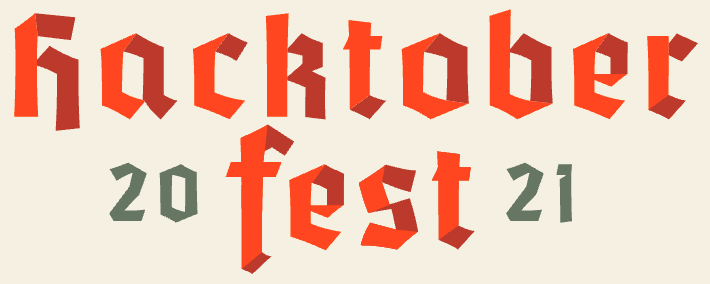

class: center, middle, inverse, title-slide #  ### Curso-R & R-Ladies São Paulo ### Atualizado em 13/10/2021 --- <div> <style type="text/css">.xaringan-extra-logo { width: 110px; height: 128px; z-index: 0; background-image: url(img/Icon.png); background-size: contain; background-repeat: no-repeat; position: absolute; top:1em;right:1em; } </style> <script>(function () { let tries = 0 function addLogo () { if (typeof slideshow === 'undefined') { tries += 1 if (tries < 10) { setTimeout(addLogo, 100) } } else { document.querySelectorAll('.remark-slide-content:not(.title-slide):not(.inverse):not(.hide_logo)') .forEach(function (slide) { const logo = document.createElement('a') logo.classList = 'xaringan-extra-logo' logo.href = 'https://r-ladies-sao-paulo.github.io/2020-hacktoberfest/' slide.appendChild(logo) }) } } document.addEventListener('DOMContentLoaded', addLogo) })()</script> </div> ## Apresentação derivada de: <img src="https://r-ladies-sao-paulo.github.io/2020-hacktoberfest/img/arte_meetup.png" width="70%" style="display: block; margin: auto;" /> https://r-ladies-sao-paulo.github.io/2020-hacktoberfest/ --- ## O que é a **Hacktoberfest**? - É uma celebração do __open source__ que ocorre em outubro. - A **Hacktoberfest** é aberta para todes! - Pessoas fazem contribuições em projetos abertos. - Caso faça contribuições válidas (de acordo com as regras), pode ganhar uma camiseta e adesivos 👕 OU pode escolher a opção de plantar uma árvore. --- ## Regras para receber o prêmio - Necessário realizar 4 **contribuições válidas**, através de __Pull Requests__ no [GitHub](https://github.com). > Pull Requests = PR = a forma que enviamos contribuições nos repositórios :) - Para ser uma contribuição válida: - Precisa ser submetida durante o mês de outubro - Para repositórios __com ou sem__ o tópico `Hacktoberfest`: A pessoa mantenedora do repositório precisa adicionar uma label/rótulo de `hacktoberfest-accepted` no Pull Request - Para repositórios __com__ o tópico `Hacktoberfest`: PR é aprovado ou merged Saiba mais em: https://hacktoberfest.digitalocean.com/resources/participation --- class: middle ## Repositórios podem ter tópicos. Exemplo: <img src="img/exemplo-repo-topicos.png" width="70%" style="display: block; margin: auto;" /> --- class: middle ## Exemplos de repositórios .pull-left[ ### __Com__ tópico Hacktoberfest <img src="img/exemplo-com-topico-hacktoberfest.PNG" width="70%" style="display: block; margin: auto;" /> [carpentries/glosario](https://github.com/carpentries/glosario) ] .pull-right[ ### __Sem__ tópico Hacktoberfest <img src="img/exemplo-sem-topico-hacktoberfest.PNG" width="80%" style="display: block; margin: auto;" /> [R-Ladies-Sao-Paulo/xaringan](https://github.com/R-Ladies-Sao-Paulo/xaringan) ] --- class: middle ## Pull Requests (PRs) podem ter labels Exemplo de Pull Request com label/rótulo de `hacktoberfest-accepted`: <img src="img/exemplo-PR-label-hacktoberfest-accepted.PNG" width="70%" style="display: block; margin: auto;" /> --- ## Como participar? - No site da __Hacktoberfest__, [faça o login com o GitHub e/ou GitLab](https://hacktoberfest.digitalocean.com/register) <img src="img/login.png" width="60%" style="display: block; margin: auto;" /> --- ## Como participar? .pull-left[ - Dê permissão utilizando sua conta do GitHub ] .pull-right[ <img src="img/con_github.png" width="50%" style="display: block; margin: auto;" /> ] --- ## Como participar? - [Nesta página](https://hacktoberfest.digitalocean.com/profile) ficarão listados as suas contribuções, com uma legenda sobre o status da sua contribuição. Enquanto não houver contribuições válidas, a página ficará assim: <img src="img/profile-sem-controbuicoes.png" width="80%" style="display: block; margin: auto;" /> --- ## Contribuições <img src="img/profile_1_pr.png" width="80%" style="display: block; margin: auto;" /> --- ## Legenda - __In progress__: Seu PR foi aceito por uma pessoa mantenedora e atualmente está dentro do período de revisão, que dura quatorze dias. - __Completed__: Parabéns! Seu PR passou no período de revisão e conta para a conclusão do desafio da Hacktoberfest! --- ## Repositórios para contribuir - Da Curso-R: - [munifacil](https://github.com/curso-r/munifacil) - [Livro Ciência de Dados em R](https://github.com/curso-r/livro-material) - [Veja o livro aqui!](https://livro.curso-r.com/) - [auth0](https://github.com/curso-r/auth0) - [torchaudio](https://github.com/curso-r/torchaudio) - Outros repositórios: - [Materiais de estudo de R](https://github.com/beatrizmilz/materiais_estudo_R) - [Veja a página aqui](https://materiais-estudo-r.netlify.app/) - [Capítulos da R-Ladies no Brasil](https://github.com/R-Ladies-Sao-Paulo/RLadies-Brasil) - [Arquivo `data-raw/capitulos_redes.R`](https://github.com/R-Ladies-Sao-Paulo/RLadies-Brasil/blob/master/data-raw/capitulos_redes.R) - [microdatasus](https://github.com/rfsaldanha/microdatasus) - [Base dos Dados](https://github.com/basedosdados/mais/#usando-em-r) --- class: inverse, center, middle ## Bom evento! 👩💻 Caso tenha dúvidas, veja as [perguntas frequentes](https://hacktoberfest.digitalocean.com/faq)! Apresentação feita com <i class="fab fa-r-project"></i> e os pacotes [xaringan](https://github.com/yihui/xaringan) + [xaringanthemer](https://pkg.garrickadenbuie.com/xaringanthemer/) e [xaringanExtra](https://pkg.garrickadenbuie.com/xaringanExtra/), por: Agradecimentos: Beatriz Milz <a href='https://twitter.com/BeaMilz' target="_blank"><i class="fab fa-twitter"></i></a> , Angélica Custódio <a href='https://twitter.com/angcustodio' target="_blank"><i class="fab fa-twitter"></i></a>, Jean Prado <a href='https://twitter.com/jeangprado' target="_blank"><i class="fab fa-twitter"></i></a> <!-- inicio font awesome --> <script src="https://kit.fontawesome.com/1f72d6921a.js" crossorigin="anonymous"></script> <!-- final font awesome --> <link rel="stylesheet" href="https://cdn.jsdelivr.net/gh/jpswalsh/academicons@1/css/academicons.min.css">